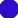

<!doctype html>
<html lang="en">
    <head>
        <meta charset="utf-8">
        <meta http-equiv="X-UA-Compatible" content="IE=edge">
        <meta name="viewport" content="initial-scale=1,user-scalable=no,maximum-scale=1,width=device-width">
        <meta name="mobile-web-app-capable" content="yes">
        <meta name="apple-mobile-web-app-capable" content="yes">
        <link rel="stylesheet" href="css/leaflet.css"><link rel="stylesheet" href="css/L.Control.Locate.min.css">
        <link rel="stylesheet" href="css/qgis2web.css"><link rel="stylesheet" href="css/fontawesome-all.min.css">
        <link rel="stylesheet" href="css/leaflet-search.css">
        <link rel="stylesheet" href="css/leaflet-control-geocoder.Geocoder.css">
        <link rel="stylesheet" href="css/leaflet-measure.css">
        <style>
        #map {
            width: 1550px;
            height: 600px;
        }
        </style>
        <title></title>
    </head>
    <body>
        <div id="map">
        </div>
        <script src="js/qgis2web_expressions.js"></script>
        <script src="js/leaflet.js"></script><script src="js/L.Control.Locate.min.js"></script>
        <script src="js/leaflet.rotatedMarker.js"></script>
        <script src="js/leaflet.pattern.js"></script>
        <script src="js/leaflet-hash.js"></script>
        <script src="js/Autolinker.min.js"></script>
        <script src="js/rbush.min.js"></script>
        <script src="js/labelgun.min.js"></script>
        <script src="js/labels.js"></script>
        <script src="js/leaflet-control-geocoder.Geocoder.js"></script>
        <script src="js/leaflet-measure.js"></script>
        <script src="js/leaflet-search.js"></script>
        <script src="data/watersources_1.js"></script>
        <script>
        var map = L.map('map', {
            zoomControl:true, maxZoom:28, minZoom:1
        }).fitBounds([[-6.8682791608731355,39.19007031241469],[-6.853888000951819,39.21800507596389]]);
        var hash = new L.Hash(map);
        map.attributionControl.setPrefix('<a href="https://github.com/tomchadwin/qgis2web" target="_blank">qgis2web</a> &middot; <a href="https://leafletjs.com" title="A JS library for interactive maps">Leaflet</a> &middot; <a href="https://qgis.org">QGIS</a>');
        L.control.locate({locateOptions: {maxZoom: 19}}).addTo(map);
        var measureControl = new L.Control.Measure({
            position: 'topleft',
            primaryLengthUnit: 'meters',
            secondaryLengthUnit: 'kilometers',
            primaryAreaUnit: 'sqmeters',
            secondaryAreaUnit: 'hectares'
        });
        measureControl.addTo(map);
        document.getElementsByClassName('leaflet-control-measure-toggle')[0]
        .innerHTML = '';
        document.getElementsByClassName('leaflet-control-measure-toggle')[0]
        .className += ' fas fa-ruler';
        var bounds_group = new L.featureGroup([]);
        function setBounds() {
        }
        var layer_OSMStandard_0 = L.tileLayer('http://tile.openstreetmap.org/{z}/{x}/{y}.png', {
            opacity: 1.0,
            attribution: '<a href="https://www.openstreetmap.org/copyright">© OpenStreetMap contributors, CC-BY-SA</a>',
            minZoom: 1,
            maxZoom: 28,
            minNativeZoom: 0,
            maxNativeZoom: 19
        });
        layer_OSMStandard_0;
        map.addLayer(layer_OSMStandard_0);
        function pop_watersources_1(feature, layer) {
            var popupContent = '<table>\
                    <tr>\
                        <td colspan="2"><strong>Sample ID</strong><br />' + (feature.properties['Sample ID'] !== null ? Autolinker.link(feature.properties['Sample ID'].toLocaleString(), {truncate: {length: 30, location: 'smart'}}) : '') + '</td>\
                    </tr>\
                    <tr>\
                        <td colspan="2"><strong>Sampling period</strong><br />' + (feature.properties['Sampling period'] !== null ? Autolinker.link(feature.properties['Sampling period'].toLocaleString(), {truncate: {length: 30, location: 'smart'}}) : '') + '</td>\
                    </tr>\
                    <tr>\
                        <td colspan="2"><strong>Sample description</strong><br />' + (feature.properties['Sample description'] !== null ? Autolinker.link(feature.properties['Sample description'].toLocaleString(), {truncate: {length: 30, location: 'smart'}}) : '') + '</td>\
                    </tr>\
                    <tr>\
                        <td colspan="2"><strong>Sample type</strong><br />' + (feature.properties['Sample type'] !== null ? Autolinker.link(feature.properties['Sample type'].toLocaleString(), {truncate: {length: 30, location: 'smart'}}) : '') + '</td>\
                    </tr>\
                    <tr>\
                        <td colspan="2"><strong>Problem identified</strong><br />' + (feature.properties['Problem identified'] !== null ? Autolinker.link(feature.properties['Problem identified'].toLocaleString(), {truncate: {length: 30, location: 'smart'}}) : '') + '</td>\
                    </tr>\
                    <tr>\
                        <td colspan="2"><strong>Description</strong><br />' + (feature.properties['Description'] !== null ? Autolinker.link(feature.properties['Description'].toLocaleString(), {truncate: {length: 30, location: 'smart'}}) : '') + '</td>\
                    </tr>\
                    <tr>\
                        <td colspan="2"><strong>Advice</strong><br />' + (feature.properties['Advice'] !== null ? Autolinker.link(feature.properties['Advice'].toLocaleString(), {truncate: {length: 30, location: 'smart'}}) : '') + '</td>\
                    </tr>\
                </table>';
            layer.bindPopup(popupContent, {maxHeight: 400});
        }

        function style_watersources_1_0(feature) {
            switch(String(feature.properties['Sample type'])) {
                case 'Borehole':
                    return {
                pane: 'pane_watersources_1',
                radius: 6.8000000000000025,
                opacity: 1,
                color: 'rgba(35,35,35,1.0)',
                dashArray: '',
                lineCap: 'butt',
                lineJoin: 'miter',
                weight: 1,
                fill: true,
                fillOpacity: 1,
                fillColor: 'rgba(51,160,44,1.0)',
                interactive: true,
            }
                    break;
                case 'Bottled water':
                    return {
                pane: 'pane_watersources_1',
                radius: 6.8000000000000025,
                opacity: 1,
                color: 'rgba(35,35,35,1.0)',
                dashArray: '',
                lineCap: 'butt',
                lineJoin: 'miter',
                weight: 1,
                fill: true,
                fillOpacity: 1,
                fillColor: 'rgba(45,12,212,1.0)',
                interactive: true,
            }
                    break;
                case 'DAWASA piped supply':
                    return {
                pane: 'pane_watersources_1',
                radius: 6.8000000000000025,
                opacity: 1,
                color: 'rgba(35,35,35,1.0)',
                dashArray: '',
                lineCap: 'butt',
                lineJoin: 'miter',
                weight: 1,
                fill: true,
                fillOpacity: 1,
                fillColor: 'rgba(31,120,180,1.0)',
                interactive: true,
            }
                    break;
                case 'Piezometer':
                    return {
                pane: 'pane_watersources_1',
                radius: 6.8000000000000025,
                opacity: 1,
                color: 'rgba(35,35,35,1.0)',
                dashArray: '',
                lineCap: 'butt',
                lineJoin: 'miter',
                weight: 1,
                fill: true,
                fillOpacity: 1,
                fillColor: 'rgba(227,26,28,1.0)',
                interactive: true,
            }
                    break;
                case 'Rain':
                    return {
                pane: 'pane_watersources_1',
                radius: 6.8000000000000025,
                opacity: 1,
                color: 'rgba(35,35,35,1.0)',
                dashArray: '',
                lineCap: 'butt',
                lineJoin: 'miter',
                weight: 1,
                fill: true,
                fillOpacity: 1,
                fillColor: 'rgba(255,127,0,1.0)',
                interactive: true,
            }
                    break;
                case 'River water':
                    return {
                pane: 'pane_watersources_1',
                radius: 6.8000000000000025,
                opacity: 1,
                color: 'rgba(35,35,35,1.0)',
                dashArray: '',
                lineCap: 'butt',
                lineJoin: 'miter',
                weight: 1,
                fill: true,
                fillOpacity: 1,
                fillColor: 'rgba(103,44,137,1.0)',
                interactive: true,
            }
                    break;
                case 'Shallow well':
                    return {
                pane: 'pane_watersources_1',
                radius: 6.8000000000000025,
                opacity: 1,
                color: 'rgba(35,35,35,1.0)',
                dashArray: '',
                lineCap: 'butt',
                lineJoin: 'miter',
                weight: 1,
                fill: true,
                fillOpacity: 1,
                fillColor: 'rgba(178,223,138,1.0)',
                interactive: true,
            }
                    break;
            }
        }
        map.createPane('pane_watersources_1');
        map.getPane('pane_watersources_1').style.zIndex = 401;
        map.getPane('pane_watersources_1').style['mix-blend-mode'] = 'normal';
        var layer_watersources_1 = new L.geoJson(json_watersources_1, {
            attribution: '',
            interactive: true,
            dataVar: 'json_watersources_1',
            layerName: 'layer_watersources_1',
            pane: 'pane_watersources_1',
            onEachFeature: pop_watersources_1,
            pointToLayer: function (feature, latlng) {
                var context = {
                    feature: feature,
                    variables: {}
                };
                return L.circleMarker(latlng, style_watersources_1_0(feature));
            },
        });
        bounds_group.addLayer(layer_watersources_1);
        map.addLayer(layer_watersources_1);
        var osmGeocoder = new L.Control.Geocoder({
            collapsed: true,
            position: 'topleft',
            text: 'Search',
            title: 'Testing'
        }).addTo(map);
        document.getElementsByClassName('leaflet-control-geocoder-icon')[0]
        .className += ' fa fa-search';
        document.getElementsByClassName('leaflet-control-geocoder-icon')[0]
        .title += 'Search for a place';
        var baseMaps = {};
        L.control.layers(baseMaps,{'water sources<br /><table><tr><td style="text-align: center;"></td><td>Borehole</td></tr><tr><td style="text-align: center;"></td><td>Bottled water</td></tr><tr><td style="text-align: center;"></td><td>DAWASA piped supply</td></tr><tr><td style="text-align: center;"></td><td>Piezometer</td></tr><tr><td style="text-align: center;"></td><td>Rain</td></tr><tr><td style="text-align: center;"></td><td>River water</td></tr><tr><td style="text-align: center;"></td><td>Shallow well</td></tr></table>': layer_watersources_1,"OSM Standard": layer_OSMStandard_0,}).addTo(map);
        setBounds();
        map.addControl(new L.Control.Search({
            layer: layer_watersources_1,
            initial: false,
            hideMarkerOnCollapse: true,
            propertyName: 'Sample type'}));
        document.getElementsByClassName('search-button')[0].className +=
         ' fa fa-binoculars';
        </script>
    </body>
</html>
